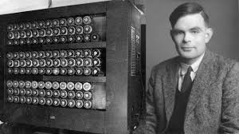

Chi era Alan Turing
Alan Turing è stato un matematico, logico e crittografo britannico, considerato il padre dell'informatica moderna.

La macchina di Turing
Alan Turing, oltre a essere famoso come matematico, è diventato noto grazie al suo lavoro nella decrittazione della macchina Enigma durante la Seconda Guerra Mondiale.

La macchina di Turing è un modello teorico ideato da Alan Turing nel 1936 per formalizzare il concetto di calcolo e algoritmo. Questa macchina astratta consiste in un nastro infinito diviso in celle, ognuna delle quali può contenere un simbolo. Un "testa di lettura/scrittura" può leggere e scrivere simboli su questo nastro, spostandosi di una cella alla volta.